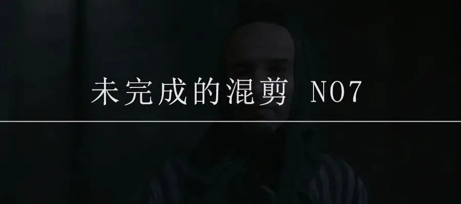
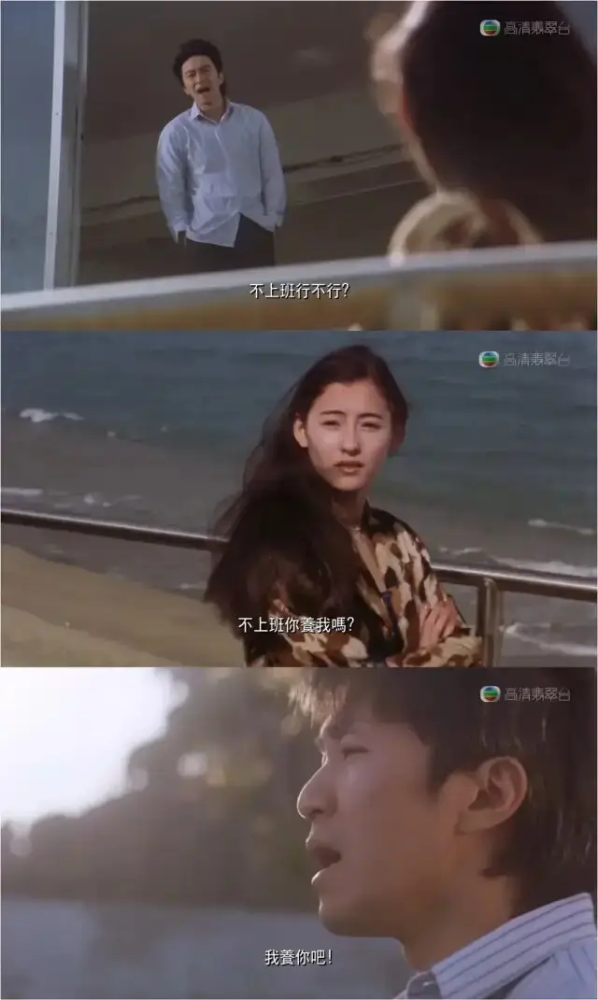
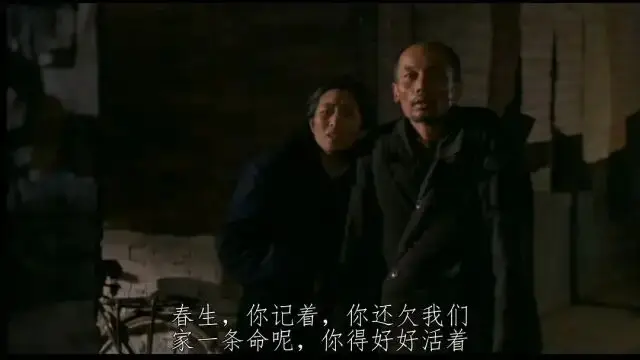
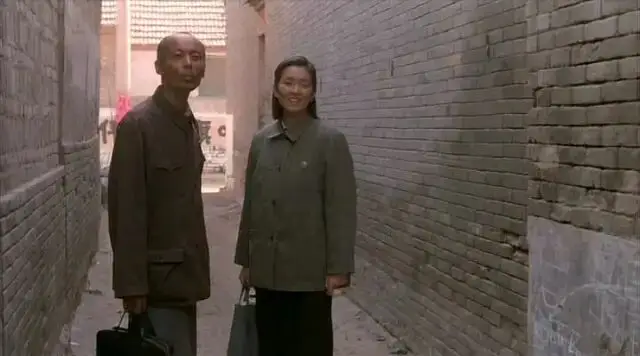
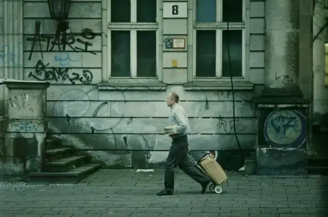
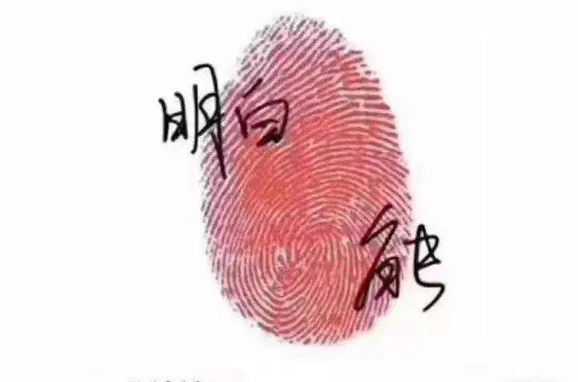

id="js_content" style="">

当特定的时间来到。
其本身的仪式感会让我们意识到，我们一直在时间中行走。
不论我们多么不情愿，时间并不会为我们驻足。
这个不断变化的时间中，承载了我们全部的喜怒哀乐、成功失败、容颜变化以及全部的生命。
这条时间和生命相交织的长河中，总有一些时刻会闪闪发光，赋予我们生命和时间的意义和价值。
今天，就和大家一起盘点那些生命中的12个高光时刻。
那里闪耀着的是人类全部的爱、希望、尊严和勇敢。
-12- 爱之承诺

《喜剧之王》中的尹天仇，是一个身处骨感现实的理想主义者。
有想法、有能力，但连一个龙套的工作也找不到。
这样的处境让他在爱情中也变得非常卑微，没有底气和资本去表达爱。
犹豫再三，尹天仇终于向心爱的女孩发出了爱的承诺。
这个承诺的声音很低，也非万众瞩目，但却是尹天仇人生的高光时刻，因为他决心会为爱去努力。
-11- 重新想起自己的名字
《千与千寻》是一个关于迷失的电影。
人类文明走向迷失，用工业埋葬了美丽的琥珀川。
白龙为了挽救琥珀川去神隐村学习魔法，却迷失了自己，忘记了自己的名字，并沦为了被魔女利用的工具。
多年以后，曾因溺水而被白龙救起的小女孩千寻迷失在神隐村。
千寻不仅用爱和勇敢找到了回家的路，还让白龙想起了自己的名字。
原来，白龙的名字叫赈早见琥珀主。
历经生命的躁动，重新找回最初的名字和心愿，这是生命里的高光时刻。
-10- 挚友
人生得一知己足矣。
他不会站在高处，发出居高临下的怜悯。
他也不会站在低处，去仰慕你的知识和财富。
他就站在身边平静地注视着你，不歧视也不吹嘘，虽彼此差异，却一路陪伴、分享快乐。
这样的友情不仅会温暖你，更会让你重拾生活的勇气，和你一同走向人生中的高光时刻。
-9- 幸福
和他在一起的时候，从未羡慕过其他人。
这就是一个女人的高光时刻。
-8- 活着

大跃进时，春生开车不慎将福贵家的儿子撞死。
从此，福贵一家对春生充满恨意。
特殊的拾年来到，春生遭到迫害痛不欲生。
深夜，春生敲响福贵家的门，将毕生积蓄交给福贵，说他不想活了。
福贵却说：春生，你记着，你还欠我们家一条命呢，你得好好活着。
这便是福贵的高光时刻，因为原谅的宽厚，更因为生命的顽强。

-7- 献给好人的奏鸣曲

一个特工，去监听一个所谓的卖国贼，想要置对方于死地。
但是他监听到的不是龌龊，而是一个在黑暗中苦苦坚持良知的人。
这让他不停地自我叩问“我还站在正确的一边么”。
最终，他选择默默地用自己的后半生来守卫一个不认识他的“陌生人”。
当他不计代价地选择站在真相和善良一边的时候，便是他人生最高光的时候。
-6-善良的权力
当有人在饭桌上炫耀自己认识某个领导，见过某个大场面时。
他渴慕的权力是能够带给自己荣耀和利益的权力。
而辛德勒却认为“所谓的权力是当我们有绝对的理由去杀生，但我们却不这么做”。
辛德勒眼中的权力是建立在服务他人和善良的基础之上。
所以面对任人鱼肉的犹太人，辛德勒没有选择和自己的同胞一起变成恶魔。
当辛德勒选择用自己的权力去保卫他人生命的时候，便是他人生中的高光时刻。
-5-父亲的牺牲
用想象力和生命让自己的孩子跳跃了死亡和恐惧。
这是作为一个父亲的高光时刻。
-4- 信仰
很多人问残酷的战争中，传说中的上帝在哪里？
戴斯蒙德·道斯会用他在枪林弹雨中的奇迹告诉你，上帝一直在那里。
信仰的时刻便是他最高光的时刻，因为他会变得无所畏惧。
-3- 自由
高光的时刻，不论是心灵还是身体，都是自由和喜乐的。
-2- 忏悔
《悲惨世界》中的冉阿让为了挨饿的孩子去偷面包，结果却被判处19年的苦役。
这是怎样不公不义的世界！
多年后，冉阿让出狱后，在走投无路的情况下，冉阿让偷走了收留他过夜的主教的银器后潜逃。
可很快，冉阿让再次被抓捕。
一片面包19年，那银器呢？
冉阿让不敢想象自己的结局，可这个时候神父却和警察说，银器是他送给冉阿让的。
就是这一刻，冉阿让被爱的救赎温暖。
他决心忏悔，为自己过去十几年内心里的苦毒、怨恨和冷漠。
忏悔的时刻，是他心里大有平安和喜乐的时刻，也是他获得重生的高光时刻。
-1- 勇敢

当他决定不顾一切说出来的时候，便是他人生中的高光时刻。
他不应该被忘记。
他的牺牲不应该被忘记。
他的教训更不应该被忘记。
这里，也向参与恩典中介的小天使表示感谢。
在那个人人自危自保的时候。
当你们只有10个口罩，却愿意全部拿出来捐往武汉的时候，便是你们的高光时刻！
相似推荐
▼
已完成的混剪no 1
已完成的混剪no 2
已完成的混剪no 3
未完成的混剪no 1
未完成的混剪no 2
未完成的混剪no 3
未完成的混剪no 4
未完成的混剪no 5
未完成的混剪no 6
这里没有挑逗你眼目情欲的小鲜肉
也没有挑动你肉体情欲的段子
更没有膨胀你今生骄傲的鸡血
我们只在乎那些最质朴真诚的作品
在那里我们才能恢复真正的想象力
我们也坚信这才是我们真正需要的

ID:Six_hundred_hits
长按二维码，一键关注
【六百击】
电影评论
尽情分享朋友圈

微信二维码打赏通道